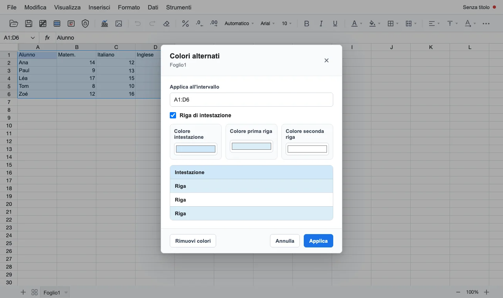

Formattazione
Testo
| Comando | Accesso |
|---|---|
| grassetto, corsivo, sottolineato | ; Ctrl B, Ctrl I, Ctrl U |
| carattere | elenco Arial: tredici caratteri |
| dimensione | elenco 10, o Formato › Dimensione carattere: da 9 a 72 |
| colore del testo, dello sfondo | |
| cancellare la formattazione | , Formato › Cancella formato |
Nella tavolozza di un colore, Reset color lo toglie; Personalizzato apre il selettore del sistema.
Mentre si modifica una cella, la formattazione si applica alla parte selezionata del testo.
Allineamento
| Comando | Scelte |
|---|---|
| orizzontale | sinistra, centro, destra |
| verticale | in alto, in mezzo, in basso |
| rotazione | inclinata, verticale, impilata |
| testo a capo | Overflow: sulle celle vuote vicine; A capo: su più righe; Ritaglia: tagliato al bordo |
Senza allineamento scelto, numeri e date sono a destra, il resto a sinistra.
Bordi
traccia il bordo scelto; la sua freccia dà i lati (superiore, esterno, interni, tutti, nessuno, diagonale), il colore e lo stile della linea. Scegliere colore e stile prima del lato.
Unire
o Formato › Unisci celle:
| Comando | Effetto |
|---|---|
| Unisci tutto | una sola cella, che conserva un solo contenuto |
| Unisci verticalmente | una cella per colonna |
| Unisci orizzontalmente | una cella per riga |
| Annulla unione | restituisce le celle |
Un intervallo che contiene celle unite non si può ordinare né filtrare.
Colori alternati
o Formato › Colori alternati... colora una riga su due dell’intervallo selezionato, con una riga di intestazione se si vuole. I tre colori si scelgono.

Sono normali colori di sfondo: non seguono un ordinamento né una riga inserita. Rimuovi colori li toglie dall’intervallo.
Griglia
o Visualizza › Mostra › Griglia nasconde o mostra le linee grigie, in tutti i fogli della cartella. La stampa ha la sua impostazione.
Per un colore che dipende dal valore, vedere Formattazione condizionale.